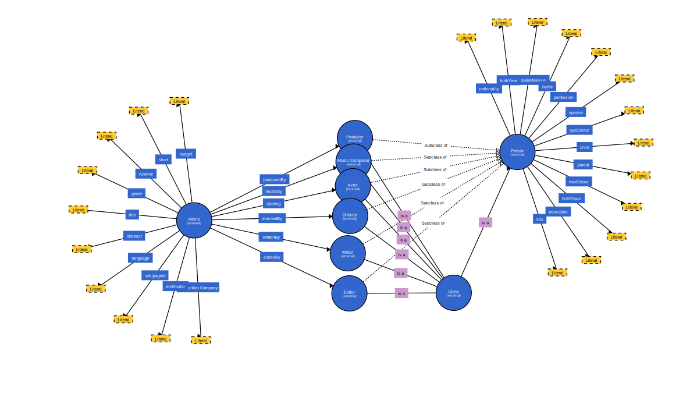

OVI should represent a system able to model and manage the knowledge about the provenance of each video resource available online. This technical report describes the preliminary considerations we took when thinking up our application, what we wish to implement, what we think of using and a few other aspects.
Our application will implement a microservices architecure style. The ideea is to have two services, one which will pull information and another which will update the existing information or add new information. By doing this, we want to separate the read and write operations that are performed over our dataset and have them well defind as such.
The first service we shall talk about is the Search Service. As the name implies, all operations that are related to searching, quering our dataset, will be managed here. The main features here will be two endpoints, one to query if and how many movies with similar titles are in our dataset and one for getting information about a specific movie.
The first endpoint, "/movies/titles/{title}", will be used whenever an user searches for a movie by its title or only part of it (e.g. "The Lord of the Rings" or just "lord" or "ring"). When this happens, a GET request will be made, our dataset will be queried agains and all matching titles will be returned, along with their URI. The titles will be displayed as a list for the user to see.
When the user clicks on one of the titles from the list, another GET request will be made, this time to the "/movies/data/{movieUri}" endpoint, which will return all properties of said title, by querying and then filtering using the URI return along with the title in the previous call to the service. The results from this endpoint will contain as well the values that will be displayed for the user, along with their URI, where we can consider them (an actor may have an URI, but the same can not be said about the duration of the movie.)
In case an user searches for something that is not in our dataset, we may consider quering other available datasets, such as DBpedia and getting our information from there. In that case, these operations will also be handled by the Search Service.
This service only has one endpoint and its purpose is to populate our dataset. In other words, the process of gathering data, processing it and then inserting said data into our dataset takes place here. Also to be noted here is that this service will not be available for the users.
To gather data, we query against DBpedia's own endpoint. In order to obtain only movies as results, we looked for properties that would only be related to them and the ones we found were: "dbo:Film" and "schema:CreativeWork". While the first one is their own property, used to describe the type of and entity, "schema:CreativeWork" acts as a "owl:SameAs" for it, in order to relate to schema.org's ontology. Aside from these two, we could also check that our results will have a few required fields, decided upon ahead of time.
For example, we would expect that each movie would have be dirceted by a director and it would have some actors that starred in it. Also, it would be produced in a certain language and, of course, it would be recognized by its name. The following query would return movies that match what was just stated, but for our project we would need more than this.
select distinct ?movie WHERE
{
?movie a dbo:Film. ?movie a schema:CreativeWork .
?movie dbp:director ?director.
?movie dbp:language ?language.
?movie dbp:starring ?starring.
?movie dbp:name ?name
}
The information return by such a query will then be processed such that we could add it into our own dataset. This would mainly include parsing through the results, decoding and encoding values, where needed and arranging them into triples that would then be inserted. For startes, when talking about a property such as a director, we would look at two triples to insert: one that states the type of the resource and one that states the film which he directed. More work may be done to expand on this also.
The purpose of this service is to find movies that have the same properties as the movie the recommendation is made for.
The only route, '/recommend' receives a GET request and takes its' parameters from the query string. The parameters it can take are 'movie' for the URI of the movie the recommendation is made for, 'actors' for URIs of people starring in the movie, 'directors' for URIs people that directed the movie, and 'genres' for the genres of the movie. Note that the URIs will be url encoded and all parameters but movie can be a list of multiple items separated by a custom separator -> "|separator|".
An example of such a request would be /recomandation?movie=http%3A%2F%2Fwww.wade-ovi.org%2Fresources%23movie%2FW.M.D.&directors=http%3A%2F%2Fwww.wade-ovi.org%2Fresources%23Wang%2BWei-ming%7Cseparator%7Chttp%3A%2F%2Fwww.wade-ovi.org%2Fresources%23John%2BCardos.
The service queries our dataset for movies different from the one given as parameter, that have at least one actor or one director or can be included in one of the genres from the list of parameters given. It then processes the result and sends it back to the party that made the request.
The component that the user will interact with when using our application will be implemented in AngularJS. It could be split into two main parts:
This is the main page that an user will land on when using our application.
On this page the user can see a search panel, where he can insert a text of his choice (representing a movie title or a portion of a movie title) and press the search button in order to be redirected to another page where he can see a list of the titles of the movies that matched the input text.
When clicking on one of the titles, the user will be redirected to a page that displays all the information available in the dataset about that particular movie. On this page there will be a box that shows movies that have the same director/actors/genre (recommendations). If the title of a movie from the recommendation box is clicked, the user will be redirected to that movies' corresponding data display page (as if he would have searched for that movie in the searchbar). There will also be a button for the user to get back to the search panel.
If the name or the value of a property (from the movies data display view) is clicked, the user will be redirected to a page containing a representation of all the triples in which that resource is present, be it as a subject, predicate, or object. Similar to how the search bar works, an user may also be able to navigate to the page of a certain resource by writing directly in the address bar. Of course, this requires that the user has knowledge beforehand of the address of the resource that he is trying to access and that no mistakes are made while writing the URI.
In the case of viewing a person's triples page (e.g director, producer, actor, writer) there will be a button that, when clicked, will extract additional data about that person from dbpedia, if the user wishes to.
Taken from their website, dotNetRDF is a free and Open Source library for parsing, managing, querying and writing rdf. It also provides a common .NET API for working with RDF triple stores such as AllegroGraph, Jena, Stardog and Virtuoso. After looking at our options, dotNetRDF proved to be the one that offers the most functionalities and also the one that is most frequently used.
The first thing we tried to do using dotNetRDF was to try to connect to the DBpedia SPARQL endpoint. This is done in order to pull information from DBPedia, with which we will build our own dataset. To achieve this, we used an already existent class, SparqlRemoteEndpoint, which connects to an endpoint and then allows executing queries on it.
The information that we manage to pull from DBpedia is then parsed through and, using our own ontology, added to an OntologyGraph. This API provides certain abstractions over graphs, which make it easier to perform certain operations such as adding a type or property. For more specific operations, we can still work directly with triples and also use queries.
After we finish adding triples in our graph, we save it into an rdf file, thus creating our dataset.
When we first started doing research on ontologies for our application we stumbled across MovieLabs, which provides what is maybe the most extensive ontology when it comes to the subject of movies and TV series. The Ontology for Media Creation was created to aid in the process of sharing information for all that is related to a movie, from details of its filming, to its profit and so on.
However, since this ontology is so extensive we decided to create our own. Our ontology was based on two resources we usualy found on dbpedia when searching for movies, dbo:Film and schema:CreativeWork. To elaborate, we searched through the properties that each of these resources had, and picked the ones that we considered to be more common in movies queries and more relevant when reffering to movies information that the user might want to know.
This selection was also helpful for the diversity of our dataset, since the storage memory for rdf graphs is limited. Having less properties that are more relevant for every movie allows us to have information about more movies.
One detail worthy of being mentioned is that our ontology also has a few properties defined for the persons involved in the provenence of a movie.
In order to generalize the format of the elements in the dataset, we decided to use URIs as unique identificators for each element. This technique would also be helpful when providing a way of visualizing the data, as each resource identificator would point to a HTML page served by the client that contains useful information about the structure of the corresponding resource, as well as other details or recomandations that we might implement later on.
Each of these pages also provides additional content regarding other resources that are somehow related to the element that is currently viewed, along with their corresponding URIs. Each movie will contain links to the description of the genre it belongs to, links to the job description of the staff that was needed to create it, and every other resource and property in the dataset will contain references to all the other resorces or properties related to it.
As a concrete example of data linkage, when accessing the URI http://www.wade-ovi.org/resources#movie/Inception the rendered page would contain columns such as rdf:Type -> http://www.wade-ovi.org/resources#Movie. Considering PREFIX resources : http://www.wade-ovi.org/resources# the movie would also have columns such as resources:starring -> resources:Leodardo+DiCaprio. And if we access the page of Leonardo DiCaprio we could se basic informations such as resources:name -> "Leonardo DiCaprio" or more detailed information (if we wish to -> if we click on the 'load more' button on the page) such as resources:hairColour ->"Blonde".
Summarizing the aspects mentioned before, this application describes the provenance of movies by extracting relevant information about them (as shown in the ontology description) and connecting that information to any other piece of information related to it. The final product allows users to circle through the descriptions of a movie's relevant aspects in order to find movies that share common ground in terms of properties (such as language), or persons that are involved in the production of different movies, along with details about those persons.
The purpose of this section is to list some of the other data sources and APIs that we use, but do not entail an entire section of their own. Some of them we may also consider using along in the implementation of our project, but we do not have a clearly defined purpose for them.
DBpedia extracts information from Wikipedia and makes it avaialble on the World Wide Web in a structured form.
As can be gathered from previous mentions of it, we make use of their sparql endpoint to gather information in order to expand our dataset.
We have multiple kinds of queries : dbpedia queries, retrieve queries on our dataset, and insert queries on our dataset. We query dbpedia on their sparql endpoint when we retrieve data for our initial dataset, when the user searches for a movie that is not in our dataset (we do a search based on the title, simmilar to when we populate the initial dataset), and when the user clicks the button to populate data about a certain person.
We query our dataset when the user searches for a movie based on the title, when the user clicks on a movie title to see more information about it, when the recommendations are being shown, and when the user clicks on the name of a resource or property in the the movie information view or the resource/property information view (the one that enumerates the triples in which a certain resource is present).
We use insertion queries when we insert the data retrieved from dbpedia into our dataset (this part is currently in progress).
As for visualization, we have the first result of the search page, where a list of the movie titles wich match the input text are shown. After the user clicks on one of these titles, the second visualization page is accessed, where all the details available in our dataset are shown. On this page, there is a button that, when clicked, renders a box of titles of movies that are recomended based on the properties of the movie that is currently viewed. Another view page is accessed when the user clicks on the name of a property or resource or navigates to the link of a property or resource. This view contains data about all the triples the corresponding resource or property is present in.
The recommendation operation is present on the movie information show page. There is a button that, when clicked, sends a request to the recommendation service in which the movie for which the recommendation is done is specified, as well as certain properties of the movie (genre, directors, actors). The service returns a list of movie titles that contain at least one of those properties.